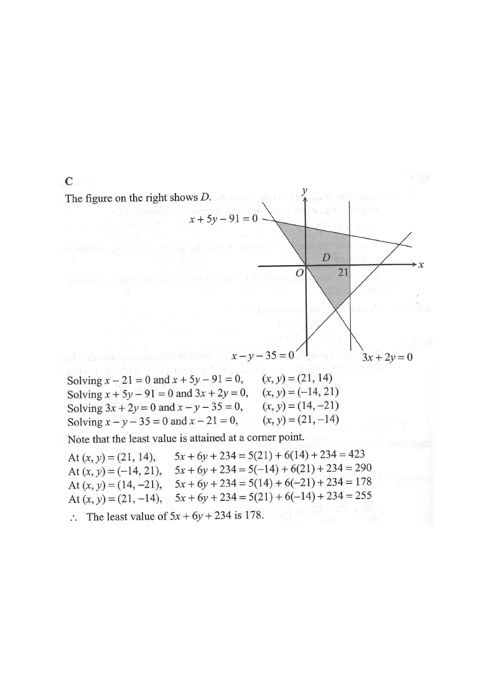

Scroll the solution to highlight each step.
Question 34 Consider the following system of inequalities:
Let $D$ be the region which represents the solution of the above system of inequalities. If $(x,y)$ is a point lying in $D$, then the least value of $5x+6y+234$ is

Write each inequality as an equation and draw the line:
$\quad x = 21$ (vertical) · $x-y = 35$, i.e. $y = x-35$
$\quad x+5y = 91$, i.e. $y = \dfrac{91-x}{5}$ · $3x+2y = 0$, i.e. $y = -\dfrac{3x}{2}$
Hint: the last line passes through the origin, so the region is a quadrilateral closed on all four sides.
Each corner is the simultaneous solution of two boundary lines:
| Lines meeting | Working | Corner |
|---|---|---|
| $x=21$ and $x-y=35$ | $21-y=35 \Rightarrow y=-14$ | $(21,\,-14)$ |
| $x=21$ and $x+5y=91$ | $21+5y=91 \Rightarrow y=14$ | $(21,\,14)$ |
| $x-y=35$ and $3x+2y=0$ | $y=x-35$, $5x=70 \Rightarrow x=14$ | $(14,\,-21)$ |
| $x+5y=91$ and $3x+2y=0$ | $x=-2y/3$, $\tfrac{13}{3}y=91 \Rightarrow y=21$ | $(-14,\,21)$ |
Each corner satisfies the two remaining inequalities: at $(-14,21)$, $x-21=-35\le0$ and $x-y=-35\le0$; at $(21,14)$, $3x+2y=91\ge0$ and $x-y=7\le0$. So $D$ is exactly the quadrilateral with these four corners.
| $(x,y)$ | $5x$ | $6y$ | $5x+6y+234$ |
|---|---|---|---|
| $(-14,\,21)$ | $-70$ | $126$ | $290$ |
| $(14,\,-21)$ | $70$ | $-126$ | $178$ |
| $(21,\,-14)$ | $105$ | $-84$ | $255$ |
| $(21,\,14)$ | $105$ | $84$ | $423$ |
Hint: the constant $234$ is added to every value, so it does not change which corner wins.
The four values are $290$, $178$, $255$ and $423$, so
$\quad$ least $= \mathbf{178}$, attained at $(14,\,-21)$.
Hint: $423$ is the greatest value (at $(21,14)$) — it is option D and is the classic trap here; the question asks for the least.
(Least value of $5x+6y+234$ on $D$, attained at $(x,y)=(14,-21)$.)
Question. A region \\(D\\) is defined by \\(x\geq0\\), \\(y\geq0\\), \\(x+2y\leq12\\) and \\(2x+y\leq12\\). Find the greatest value of \\(3x+5y+7\\) at a point \\((x,y)\\) in \\(D\\).